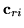
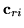

Variance Transformation Matrix (MLLRVAR, MLLRCOV)
Estimation of the first variance transformation matrices is only available
for diagonal covariance Gaussian systems in the current implementation,
though full transforms can in theory be estimated. The Gaussian covariance is
transformed using9.4,
where
is the linear transformation to be estimated and
 is the inverse of the Choleski factor of
,
so
and
is the inverse of the Choleski factor of
,
so
and
After rewriting the auxiliary function, the transform matrix
is estimated from,
Here,
is forced to be a diagonal transformation by setting
the off-diagonal terms to zero, which ensures that
is also diagonal.
The alternative form of variance adaptation us supported for full,
block and diagonal transforms. Substituting the for expressions for
variance adaptation
into the auxiliary function, and using the fact that the covariance
matrices are diagonal yields
where
is row of  , the
, the  row vector
 is the vector of
cofactors of ,
,
and
row vector
 is the vector of
cofactors of ,
,
and
 is defined as
is defined as
Differentiating the auxiliary function with respect to the transform
, and then maximising it with respect to the transformed mean
yields the following update
This is an iterative optimisation scheme as the cofactors mean the estimate
of row  is dependent on all the other rows (in that block). For the
diagonal transform case it is of course non-iterative and simplifies to
the same form as the MLLRVAR transform.
is dependent on all the other rows (in that block). For the
diagonal transform case it is of course non-iterative and simplifies to
the same form as the MLLRVAR transform.
Back to HTK site
See front page for HTK Authors